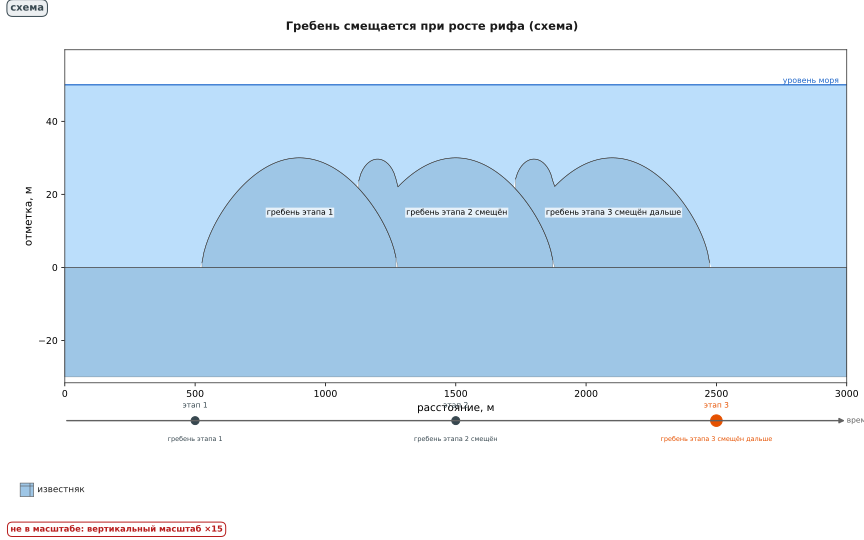

Путь › Когда лучшие коллекторы — на краю или вдоль рифа › Шаг 24 из 56
Коллекторы смещаются вместе с гребнем
В книге: «Асимметрия рифовых резервуаров. Шуртанское месторождение» стр. 209, 211
Опирается на: шаг 10 «Поперёк линейной цепи рифов» (предпосылка, пример), шаг 20 «Почему лучшие коллекторы у края рифа» (предпосылка)
Суть
В асимметричной рифовой системе коллекторы распределены так же асимметрично, как фации.
На Шуртанском месторождении зона лучших коллекторов смещается вместе с биогермным гребнем по мере роста рифа.
Смещение значит, что благоприятная фация каждый раз формировалась в новом месте, а не что породы передвинулись.
Пороговая идея. Различать геометрию рифа в одном срезе и смену положения гребня между этапами роста. модель
Как это работает
Правило
Автор делает вывод: в асимметричных рифовых системах размещение коллекторов связано с фациальной зональностью — закономерным расположением фаций. Поэтому оно тоже асимметрично. стр. 209
«В асимметричных рифовых системах пространственное распределение коллекторов также связано с фациальной зональностью и поэтому асимметрично.»
Пример Шуртана
Пример — Шуртанское месторождение Западного Узбекистана. Там зоны улучшенных коллекторских свойств смещаются во времени вслед за смещением биогермного гребня. стр. 209
«Отчетливое смещение зон улучшенных коллекторских свойств в связи с последовательным смещением во времени биогермного гребня отмечается, например, на Шуртанском месторождении Западного Узбекистана»

Как читать рис. 10.5
Рис. 10.5 книги сопоставляет литолого-фациальный профиль — разрез с составом пород и обстановками — и распределение коллекторов. стр. 211
«Литолого-фашнальный профиль (а) и распределение коллекторов рифа Шурган (б)»
На профиле различены биогермные, шлейфовые отложения и отложения глубоководного шельфа и мелководных шельфовых равнин. Отдельно выделены баровые отложения, верхняя часть склона, внутренняя часть бассейна и чёрные сланцы. стр. 211
«Отложения: 1 – биогермные, 2 – шлейфовые, 3 – глубоководного шельфа, 4 – мелководных шельфовых равнин»
«5 – баровые, 6 – верхней части склона, 7 – внутренней части бассейна, 8 – черных сланцев»
Ещё показаны отложения зон взмучивания, где вода поднимает осадок со дна, иловых впадин и прибрежных лагун. стр. 211
«9 – зон камучивания, 10 – иловых впадин, 11 – прибрежных лагун»
Критерий коллектора на рисунке
Породы-коллекторы на рисунке — это породы с пористостью более 6 % и одновременно проницаемостью более 0,0001 мкм². Остальные отнесены к неколлекторам отдельным классом. Эти границы взяты из легенды конкретного рисунка. стр. 211
«породы коллекторы с пористостью более 6 % и проницаемостью более 0,0001 мкм², 13 – породы неколлекторы»
«породы коллекторы с пористостью более 6 % и проницаемостью более 0,0001 мкм², 13 – породы неколлекторы»
«породы коллекторы с пористостью более 6 % и проницаемостью более 0,0001 мкм², 13 – породы неколлекторы»
Разбор примеров из книги
Распознавание зоны улучшенных свойств на Шуртане стр. 209
Условие. Даны профиль и распределение пород-коллекторов с пористостью более 6 % и проницаемостью более 0,0001 мкм².
- Сопоставить литолого-фациальный профиль с распределением коллекторов.
- Сравнить положение биогермного гребня и зоны улучшенных свойств на последовательных этапах.
Итог. Зона улучшенных свойств смещается вместе с гребнем.
Цифры и условия
- Коллектор на рис. 10.5: пористость более 6 % и проницаемость более 0,0001 мкм² одновременно. стр. 211
- Условие: граница коллектора относится к этому рисунку, а не ко всем рифам. стр. 211
Что это значит для данных модель
Для Айгерим: размеченный коллектор сопоставляется с фацией данного интервала.
- Вход
- Профиль пород, порядок возрастных интервалов, распределение коллекторов и использованные пороги.
- Выход
- Сопоставление положения гребня и зон улучшенных свойств по интервалам.
- Где ломается
- Если совместить интервалы только по глубине и не учесть их геологический возраст.
- гипотеза Возрастно согласованные признаки могут точнее восстановить положение коллектора, чем расстояние до центра рифа.
Где здесь ручной труд специалиста
- Входные данные
- Фациальный профиль и карта распределения коллекторов.
- Ручные шаги
- Привязать интервалы, установить положение гребня и сравнить положение зоны.
- Точки суждения
- Отличить смещение гребня от иной причины расхождения и не переносить локальные пороги автоматически.
- Время
- Зависит от числа профилей и согласованности возрастной привязки.
- Типичные ошибки
- Зеркально продолжить зону или усреднить сводную разметку по всем интервалам.
Аналогия модель
Сравнение последовательных версий пространственного слоя: отслеживаем, где меняется положение выделенной области.
Где аналогия перестаёт работать: Геологические границы реконструируются по неполным наблюдениям; срезы не равны снимкам системы в реальном времени.
Как это делается сейчас модель
Сохранять версии фациальной разметки и пороги рядом с границами коллекторов, чтобы при изменении критерия не спутать геологическое смещение со сменой классификации.
Глубже
Что означает смещение модель
Смещение на последовательных срезах не означает, что готовые породы горизонтально передвинулись: новый участок благоприятной фации формируется в другом месте.
Рисунки книги к этому шагу
- Рис. 10.5. Рис. 10.5. Литолого-фашнальный профиль (а) и распределение коллекторов рифа Шурган (б) [Ильин, Фортунатова, 1988]. Отложения: 1 – биогермные, 2 – шлейфовые, 3 – глубоководного шельфа, 4 – мелководных шельфовых равнин, 5 – баровые, 6 – верхней части склона, 7 – внутренней части бассейна, 8 – черных сланцев, 9 – зон камучивания, 10 – иловых впадин, 11 – прибрежных лагун, 12 – породы коллекторы с пористостью более 6 % и проницаемостью более 0,0001 мкм², 13 – породы неколлекторы стр. 211 (не перерисован — смотрите в книге)
Новые понятия
- Коллектор
- Порода с пустотами, способная вмещать и пропускать флюид — жидкость или газ. модель
- Фация
- Часть отложений, по признакам которой восстанавливают определённую обстановку её формирования. модель
- Пористость
- Доля объёма породы, занятая пустотами. модель
- Проницаемость
- Способность породы пропускать жидкость или газ через сообщающиеся пустоты. модель
- Фациальная зональность
- Закономерное пространственное расположение разных фаций внутри системы. модель
- Биогермный гребень
- Возвышенная полоса карбонатной постройки, выросшей за счёт организмов. модель
- Литолого-фациальный профиль
- Разрез, показывающий состав пород и восстановленные по ним обстановки накопления. модель
- Неколлектор
- Порода, не отнесённая к коллектору по принятым критериям. модель
- Шлейфовые отложения
- Осадки у подножия рифа, в том числе осыпавшийся со склона материал. модель
- Шельф
- Затопленная относительно мелкая окраина материка. модель
- Бар
- Вытянутое скопление осадка, образующее подводную или прибрежную отмель. модель
- Чёрный сланец
- Тёмная тонкослоистая осадочная порода. модель
- Зона взмучивания
- Участок, где движение воды поднимает осадок со дна. модель
- Прибрежная лагуна
- Мелководный водоём, частично отделённый от моря. модель
Проверь себя
%
Верный ответ: 6 %
Коллектор на рисунке: пористость более 6 % и проницаемость более 0,0001 мкм². Где это в тексте (стр. 211) →
Верный ответ: Биогермные и шлейфовые; Баровые и чёрных сланцев; Зон взмучивания и прибрежных лагун
Вулканических туфов в легенде нет. Где это в тексте (стр. 211) →
Верный ответ: Она смещается вместе с биогермным гребнем по мере роста рифа
Распределение коллекторов связано с фациями, а гребень со временем смещался. Где это в тексте (стр. 209) →
Источник
Все утверждения шага с дословной цитатой автора и страницей книги (по PDF).
В асимметричной рифовой системе распределение коллекторов связано с фациальной зональностью и само асимметрично. вывод
«В асимметричных рифовых системах пространственное распределение коллекторов также связано с фациальной зональностью и поэтому асимметрично.»
На Шуртанском месторождении Западного Узбекистана зоны улучшенных коллекторских свойств смещаются вместе с биогермным гребнем по мере формирования рифа. наблюдение
«Отчетливое смещение зон улучшенных коллекторских свойств в связи с последовательным смещением во времени биогермного гребня отмечается, например, на Шуртанском месторождении Западного Узбекистана»
На рисунке сопоставлены литолого-фациальный профиль и распределение коллекторов. наблюдение
«Литолого-фашнальный профиль (а) и распределение коллекторов рифа Шурган (б)»
На профиле различены биогермные, шлейфовые, глубоководно-шельфовые и мелководно-шельфовые отложения. наблюдение
«Отложения: 1 – биогермные, 2 – шлейфовые, 3 – глубоководного шельфа, 4 – мелководных шельфовых равнин»
На профиле также выделены отложения баров, верхнего склона, внутренней части бассейна и чёрных сланцев. наблюдение
«5 – баровые, 6 – верхней части склона, 7 – внутренней части бассейна, 8 – черных сланцев»
На профиле отдельно показаны отложения зон взмучивания, иловых впадин и прибрежных лагун. наблюдение
«9 – зон камучивания, 10 – иловых впадин, 11 – прибрежных лагун»
В обозначенном на рисунке классе пород-коллекторов пористость строго более 6 %. наблюдение
«породы коллекторы с пористостью более 6 % и проницаемостью более 0,0001 мкм², 13 – породы неколлекторы»
В обозначенном классе пород-коллекторов одновременно проницаемость строго более 0,0001 мкм². наблюдение
«породы коллекторы с пористостью более 6 % и проницаемостью более 0,0001 мкм², 13 – породы неколлекторы»
Породы-неколлекторы обозначены на рисунке отдельным классом. наблюдение
«породы коллекторы с пористостью более 6 % и проницаемостью более 0,0001 мкм², 13 – породы неколлекторы»
На этот шаг опираются: шаг 27 «Коллектор асимметричного рифа».